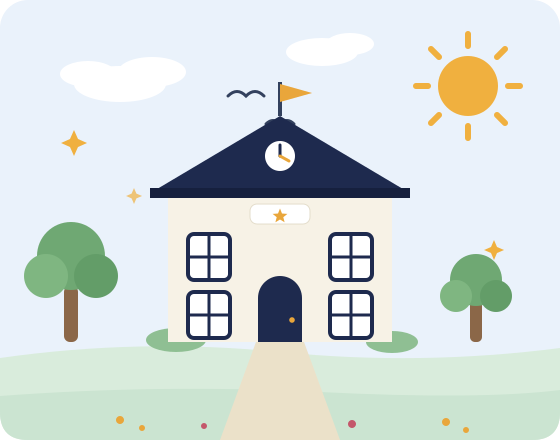
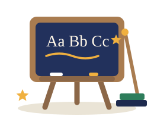

Student portal
Read illustrated lessons, test yourself with quick quizzes and hand in your assignments — all at your own pace.
- Read lessons from every subject
- Attempt quizzes and see your score instantly
- Keep track of assignments and progress
Starlight Primary School brings lessons, quizzes and assignments together in one friendly place — so learning can continue from the classroom to the kitchen table and teachers can keep every piece of work in view.
No passwords needed — choose a portal below and explore the school.

Pick the portal that matches your day. Everyone signs in through the same gate — only the rooms inside are different.
Read illustrated lessons, test yourself with quick quizzes and hand in your assignments — all at your own pace.

Publish new lessons in minutes, build matching quizzes and review submitted work from your whole class in one queue.
Built for the way lessons actually happen — short, clear and easy to follow.
Every lesson follows the same simple shape: read, think, then practise.
Multiple-choice quizzes are marked the moment they are submitted, with answers explained.
Pupils' work arrives in one organised queue, ready for a teacher to review.
Scores and completed lessons are tracked quietly in the background.